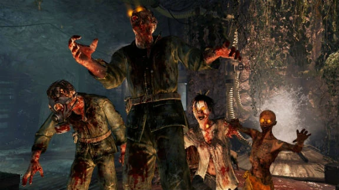
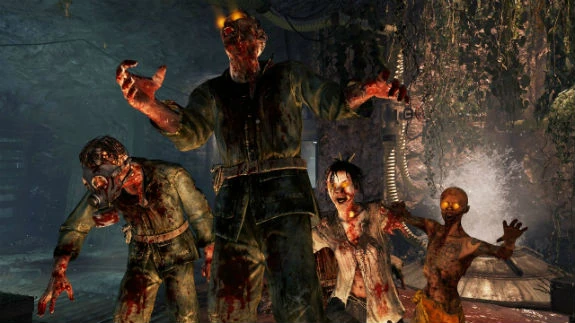

Zombies
Los Zombies son humanos muertos reanimados por el "Elemento 115" y son los antagonistas principales de la modalidad de juego del mismo nombre.
Los Zombies son humanos muertos reanimados por el "Elemento 115" y son los antagonistas principales de la modalidad de juego del mismo nombre.
El primer avistamiento de zombies se produjo en Francia, durante la Primera Guerra Mundial, entre 1917 y 1918, cuando los alemanes descubrieron por primera vez el Elemento 115